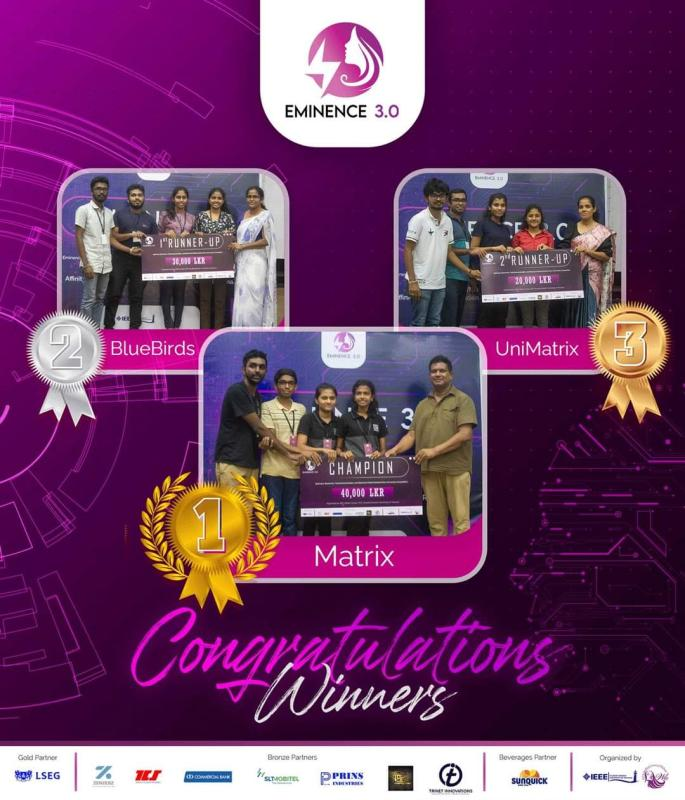

Achievements & Awards
A collection of national awards, honors, patent filings, and academic distinctions.
IESL Undergraduate Inventor of the Year (UIY) 2025
Institution of Engineers, Sri Lanka (IESL)Awarded Second Place nationally for inventing the AI-Integrated Hand Function Recovery System with Mobile Gaming & Smart Glove for Stroke Rehabilitation.


National Patent Filing — Stroke Rehabilitation Smart Glove
Sri Lanka Patent Office (NIPO)Filed a national patent application for an AI-integrated smart glove sensory system interfaced with mobile gaming engines for neuro-rehabilitation therapy.
📄 View Acknowledgement LetterInnovate with Ballerina 2025
IEEE Student Branch, University of Moratuwa & WSO2Selected among the Top 15 finalist teams nationwide out of 500+ competing teams for the Green Proxy API project.


Codefest AI Sprint 2024
Sysco LABS & SLIITAwarded a Merit Award as a core member of Team MindMesh at Codefest AI Sprint 2024.

MORA UXplore 1.0 — All Island UI/UX Designathon
IEEE Student Branch, University of MoratuwaSecured 2nd Runner-Up out of 300+ competing teams representing over 30 Sri Lankan universities as Team BitBorg. Maintained a top-five standing across three preliminary battles of rounds culminating in the final UI/UX designathon.

Eminence 3.0 Competition — 2nd Runner-Up
WIE Affinity Group, IEEE Student Branch, University of RuhunaSecured 2nd Runner-Up as Team UniMatrix in Eminence 3.0, organized by the Women in Engineering (WIE) Affinity Group, IEEE Student Branch of University of Ruhuna. The competition comprised four rigorous technical challenges: Software Challenge, MATLAB modeling, Telecommunication Network Design using Cisco Packet Tracer, and Electronics Solution Implementation for real-world applications.


B.Sc. Engineering Honours Degree
Department of Electrical & Information Engineering, University of RuhunaGraduated with First Class Honours (Current GPA: 3.76 / 4.00) in Electrical and Information Engineering.
Best Performer of the Batch Award — Diploma in IT
Siksil Institute of Business and Technology (SIBT)Recognized as the Best Performer of the Batch for outstanding academic excellence across the Diploma in Information Technology program at Siksil Institute of Business & Technology (SIBT). The diploma covered core domains including Computer Systems, Microsoft Office Suite, System Analysis & Design, Object-Oriented Programming (C# & Java), Internet & Information Security, Web Development, Mobile Application Development, and a comprehensive Software Development Capstone Project.